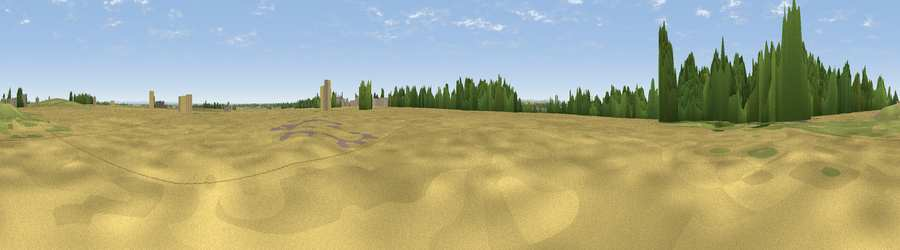

Viewpoint near Leadenham
#27649 in England · top 35% of its area beats it · near LeadenhamWhere it is
The exact computed spot (SK 96057 51467). Click the marker for map links.
The view, rendered

A 360° render of this exact spot computed from the terrain model, tree cover and land cover — summer colours, afternoon light, calibrated against photographs of famous viewpoints. Real trees, hedges and buildings will differ in detail.
The panorama
Grey silhouette: terrain skyline in each direction (720 bearings, Earth curvature and refraction included). Dashed green: skyline with trees (+15 m) and buildings (+8 m) as obstacles. Blue strip: how far the ground is visible on each bearing.
Where the view opens
Wedge length = distance to the farthest visible ground on that bearing (vegetation-aware). Rings at 10, 25 and 50 km.
What fills the view
74% cropland · 15% grassland · 8% woodland · 2% built-up ·
Angular shares of the visible panorama (visual magnitude), not map area. Landscape diversity 0.35 (0–1 Shannon).
Key numbers
More beautiful places nearby
The staircase of upgrades: each row has a higher view potential than everything closer. Driving times are estimates from straight-line distance, calibrated against real road routing — check an actual route before setting out.
| Place | Direction | Drive | Score |
|---|---|---|---|
| Viewpoint near Caythorpe | SW · 4 km | ~9 min | 49.9 |
| Viewpoint near Wellingore | NNE · 6 km | ~12 min | 52.5 |
| Viewpoint near Great Gonerby | SSW · 13 km | ~25 min | 62.0 |
| Viewpoint near Belvoir | SW · 23 km | ~37 min | 70.8 |
| Viewpoint near Claxby | NNE · 47 km | ~67 min | 71.5 |
| Viewpoint near Woodhouse Eaves | SW · 58 km | ~80 min | 77.7 |
| Viewpoint near Mow Cop | W · 110 km | ~134 min | 78.9 |
| Viewpoint near Mow Cop | W · 110 km | ~135 min | 80.2 |
53.05184, -0.56841 · source: osm peak · position refined by local search. Computed location — check access rights before visiting.